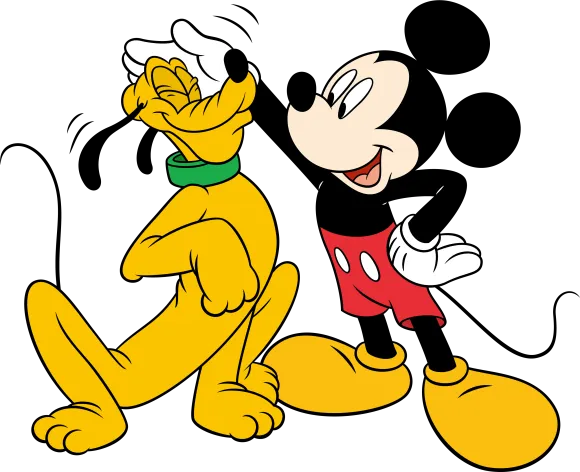

안녕하세요. 저는 시각디자인과 26학번 황지미입니다.
디자인에 관해 적어보겠습니다.

아마도 "누구세요?"라는 의문만 떠오르시겠지요. 먼저 자기소개를 하겠습니다.
디자인은 소통이라고 생각합니다.
디자인을 통해서 제공자와 소비자를 연결해주는 연결고리라고 정의하고 싶습니다.
저는 고등학생에서 벗어나 시각디자인을 배운지 겨우 한달 지났습니다.
조금 불안하게 들릴 수도 있겠지만, 열정을 가지고 배우고 있습니다.
아직 부족한 디자이너지만, 열심히 배우겠습니다.
한국폴리텍 대학 정수캠퍼스 제3공학관 207호
010-2135-7050